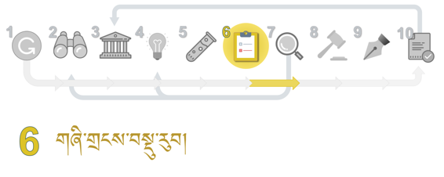
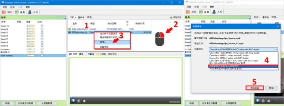

Saymoreམཉེན་ཆས་བཀོལ་ནས་དཔྱད་རྩོམ་གྱི་རྒྱུ་ཆ་བསྡུ་ཚུལ། 使用Saymore软件搜集论文资料

ཁྱེད་ཀྱི་དཔྱད་རྩོམ་གྱི་བརྗོད་བྱའི་སྐོར་མི་གཞན་ལ་བཅར་འདྲི་བྱས་པའི་སྒྲ་དང་བརྙན་གྱི་རིགས་ཡིག་འབེབ་མཉེན་ཆས་(Saymore) སྤྱད་ནས་ཡི་གེར་དབབ་པ་དང་། སྒྲ་དེ་ཡང་སྔ་ཕྱི་བྱས་ནས་སྐད་ཡིག་གཉིས་ཀྱི་ནང་དབབ་པ། དཔེར་ན། བོད་སྐད་དང་རྒྱ་སྐད། ཡང་ན་ཡིག་སྐད་དང་ཡུལ་སྐད་གཉིས་བཅས་གང་རུང་ནང་དབབ་ཚུལ་གྱི་སློབ་ཚན་ཞིག་ཡིན།
Saymore软件是幕字编辑的软件，这里我们给您介绍怎样把它引用到学术研究领域的技能。Saymore可以用在有关你的研究主题的音、视频的访问材料进行文字记载和编辑，而且可以用两种语言文字（藏文和汉文或书面语和方言）来记载音视频内容。
གཤམ་གྱི་དྲི་བ་ཁག་ལ་ངེས་པར་དུ་ལན་འདེབ་དགོས། 恳请务必选择以下选项：[矩阵量表题] *
|
ཤེས། 知道 |
མི་ཤེས་། 不知道 |
༡༽ Saymore མཉེན་ཆས་ཅི་ཞིག་ཡིན་པ་ཤེས་སམ། 您知道Saymore软件吗？ |
○ |
○ |
༢༽ མཉེན་ཆས་འདིའི་ནང་ཡིག་སྐད་དང་ཡུལ་སྐད་གཉིས་རིམ་པར་དབབ་ཚུལ་ཤེས་སམ། 您知道Saymore软件上怎么区分书面语和方言吗？ |
○ |
○ |
༣༽ མཉེན་ཆས་འདིའི་ནང་བརྙན་རིགས་སྒྲ་ལ་བསྒྱུར་སྟངས་ཤེས་སམ། 您知道Saymore软件上视频转换音频的程序吗？ |
○ |
○ |
༤༽ སྒྲ་ཡིག་གི་རྣམ་སྒྲིག་རང་མོས་ལོ་ཙཱའི་ནང་ཕབ་ལེན་བྱེད་སྟངས་ཤེས་སམ། 您知道音频格式输出自由翻译的方式吗？ |
○ |
○ |
འཚོལ་བཤེར་དྲ་ཚིགས། Search Engine 搜素引擎
ཁྱེད་ཀྱི་འཚོ་བ་དང་བྱ་བའི་ཁྲོད་གནད་དོན་ཅི་ཞིག་བྱུང་རུང་དེའི་སེལ་ཐབས་འཚོལ་བཤེར་དྲ་ཚིགས་ནང་འཚོལ་རྒྱུ་མ་བརྗེད། འཚོལ་བཤེར་དྲ་ཚིགས་ནི་ཤེས་བྱའི་བང་མཛོད་དང་ཐབས་ལམ་གྱི་སློབ་སྟོན་པ་ཡིན། འདིར་百度 འཚོལ་བཤེར་དྲ་ཚིགས་ནང་དཔེར་བརྗོད་ཀྱི་ཚུལ་དུ་“གེ་སར་སྒྲུང་”གི་སྐོར་བཙལ་ཡོད། དེའི་བཙལ་འབྲས་སོགས་ལ་བལྟ་སྟངས་གཤམ་ལ་གཟིགས། 您在生活和工作中碰到任何的问题都要记得先要用搜素引擎寻找方法和答案。搜索引擎是个知识宝库和方法指导员。在这我们使用百度搜索引擎来示范搜索 “格萨尔故事”，查看搜素结果。
འཚོལ་བཤེར་དྲ་ཚིགས་ཁག 几个搜索引擎
🢣 百度 （广泛，方便用汉语搜素，用藏语搜索不是很理想）ཁྱབ་རྒྱ་ཆེ་ཤོས། རྒྱ་ཡིག་ཁོ་ན།
🢣 微软必应 (方便使用英语) MS Bing རྒྱ་ཡིག ཨིན་ཡིག བོད་ཡིག
🢣 神马搜索 （手机使用更方便）འདི་ཁ་པར་ནང་ལྷག་ཏུ་བཟང་།
🢣 云藏 （藏语的搜索引擎）ཡོངས་འཛིན་དྲ་ཚིགས། བོད་ཡིག་གི་འཚོལ་བཤེར་དྲ་ཚིགས།
🢣 佛教数字档案馆 བུདྡྷ་དྲ་ཐོག་དཔེ་མཛོད། བོད་རྒྱ་ཨིན་གསུམ།
🔊 གསལ་འདེབས། བཙལ་བྱ་འབྲི་སྐབས་འབྲི་སྟངས་འདྲ་མིན་སྤྱད་ནས་བཙལ་ན་འབྲེལ་ཡོད་ཀྱི་བཙལ་འབྲས་དེ་ལས་མང་བ་རྙེད་སྲིད། 提示：在写索引时候用各种拼法搜索能搜到更多的相关信息
👉 དཔེར་ན། གླིང་གེ་སར་གྱི་སྒྲུང། 比如：岭：格萨尔传
👉 གེ་སར་གྱི་སྒྲུང་། གླིང་སྒྲུང་། 格萨尔传，岭传
👉 སེང་ཆེན་ནོར་བུ་དགྲ་འདུལ་གྱི་རྣམ་ཐར། 桑嵌诺布扎得的自传
👉 གླིང་སེང་ཆེན་གྱི་སྒྲུང་། ལྟ་བུ། 岭桑嵌传
གཤམ་གྱི་འདྲ་པར་ངོས་ཀྱི་དམར་རྟགས་ཅན་གྱི་འགྲེལ་བཤད། 下面照片上的红色部分的解说：
🢣 ༡ བཙལ་བྱའི་མིང་ཕྲིས། 写索引
🢣 ༢ བཙལ་འབྲས་ཀྱི་གྲངས། 搜到的数量
🢣 ༣ བཙལ་འབྲས་ཀྱི་མགོ་བརྗོད། 搜到的题目
🢣 ༤ དེ་འབྲེལ་གྱི་བརྗོད་བྱ་ཁག 其他有关此主题的
🢣 ༥ བཙལ་འབྲས་སོ་སོའི་ཁུངས། 来源
🢣 ༦ བཙལ་བྱ་དང་འབྲེལ་བའི་རྒྱུ་ཆ་གཞན། 其他有关索引的

༡༽ བཅར་འདྲིའི་དྲི་བ་གྲ་སྒྲིག་གི་དཔེ་མཚོན། 采访准备范例
དཔྱད་རྩོམ་གྱི་བརྗོད་བྱ་ “ཁྲིམས་བསོད་ནམས་བཀྲ་ཤིས་དང་རྒྱམ་ཁོ་ལྷ་རམས་པ་གཉིས་ཀྱིས་དམུ་དགེ་དགོན་པར་བཤད་གྲྭ་བཙུགས་ཚུལ་ལ་དཔྱད་པ་” དང་འབྲེལ་བའི་བཅར་འདྲི་བྱེད་པ། 关于“探析赤木索南扎西和嘉木坤拉然巴两位创建毛儿盖寺闻思院的过程”为主题的采访
བརྗོད་བྱ་དང་འབྲེལ་བའི་བཅར་འདྲིའི་དྲི་བ། དཔེར་ན། 关于主题的提问如下：
🢣 བཤད་གྲྭ་འཛུགས་དགོས་པའི་རྒྱུ་མཚན། 创建缘故
🢣 སྐབས་དེའི་ལོ་ཚིགས། 创建时间
🢣 སྐབས་དེའི་དམུ་དགེ་དགོན་དང་འབྲེལ་བའི་དགོན་པ་གཞན། 当时有关毛尔盖寺院的其他寺庙
🢣 བཤད་གྲྭ་འཛུགས་མཁན་དང་འབྲེལ་བའི་དགོན་པ་གཞན། 有关创建者的其他寺庙
🢣 སྐབས་དེའི་དགོན་པའི་གནས་བབ། 当时的寺院形态
🢣 སྐབས་དེའི་སྤྱི་ཚོགས་གནས་བབ། 当时的社会形态
🢣 སྐབས་དེའི་ཆབ་སྲིད་ཀྱི་གནས་བབ། 当时的政治形态
༢༽ ཡིག་འབེབ་མཉེན་ཆས་(Saymore) སྒྲིག་འཇུག་སྐོར། 安装幕字软件（Saymore）
ཀ༽ཡིག་འབེབ་མཉེན་ཆས་ཕབ་ལེན་གྱི་རིམ་པ། 下载幕字软件
👉 མཉེན་ཆས་འདི་(དྲ་ཐག)འདི་ནས་ཕབ་ལེན། 在此网站下载
👉 ཡང་ན་(百度)ནས་ཐད་ཀར་ཕབ་ལེན། 或者直接从百度下载
🢣 ༡རང་གི་གློག་ཀླད་ནང་ཕབ་ལེན་དང་། 下载到自己的电脑
🢣 ༢ འཇུག་སྤྲོད་བྱོས། 安装
🔊 གསལ་བཤད་ཅིག་ནི། ཡིག་འབེབ་མཉེན་ཆས་(Saymore)འདི་སྒེའུ་ཁུང་རྟགས་ཅན་གྱི་གླག་ཀླད་ནང་མ་གཏོགས་ཀུ་ཤུ་རྟགས་ཅན་གྱི་གློག་ཀླད་ནང་བཀོལ་སྤྱོད་བྱེད་མི་ཐུབ། 提示：此幕字软件只能安装到Windows系统，不能安装到苹果系统。

ཁ༽ཡིག་འབེབ་མཉེན་ཆས་འདིའི་དམིགས་བསལ་ཁྱད་ཆོས་ཁག 幕字软件Saymore的特点
🢣 སྒྲ་བརྙན་གང་རུང་གི་རྒྱུ་ཆའི་གནས་ཚུལ་ཞིབ་ཕྲ་འགོད་ཐུབ་པ། 能详细记载任何音视频的内容
🢣 ཉིན་རེ་དང་ཟླ་རེའི་ལས་ཀའི་གནས་ཚུལ་རྣམས་རང་འགུལ་གྱིས་ཉར་བ། 能自动保存每日每月的工作情况
🢣 བརྙན་རིགས་ཐད་ཀར་སྒྲ་ལ་བསྒྱུར་ཐུབ་པ། 能视频内容直接转换音频
🢣 སྒྲ་དེ་ཐད་ཀར་སྐད་རིགས་གཉིས་ཀྱི་ནང་དབབ་ཐུབ་པ། 音频能直接记载到两种文字
🢣 ཕབ་ཟིན་པ་རྣམས་རྣམ་སྒྲིག(格式)འདྲ་མིན་ལ་བསྒྱུར་ཐུབ་པ། 已记载的转换各种格式
🢣 ངག་ཐོག་སྐད་བསྒྱུར་དང་སྒྲ་ཁ་གསབ་ཐུབ་པ། 能口头翻译和增添音频内容
🢣 མཉེན་ཆས་ཀྱི་སྐད་ཡིག་རང་གིས་ཐད་ཀར་བསྒྱུར་ཆོག་པ་བཅས་སོ།། 软件语言能直接调换

༡༽ Saymoreམཉེན་ཆས་ཅི་ཞིག་ཡིན་པ་ཤེས་སོང་ངམ། 你了解到Saymore软件了吗？ [单选题] *
ཤེས་སོང་། 了解(正确答案) |
ཤེས་མ་སོང་། 不了解 |
|
༣༽ མཉེན་ཆས་ནང་སྡེ་ཚན་གསར་བཟོ་དང་མིང་འདོགས་པ། 软件内添加新任务和命名
ཀ༽ (Saymore) ཡིག་འབེབ་མཉེན་ཆས་སྒོ་ཕྱེས་ཏེ། 打开幕字软件（Saymore）
🢣 任务 སྡེ་ཚན་སྟེང་སྣུན། 点击“任务”
🢣 新建 གསར་པ་ཞིག་བཟོས། 点击“新建”
🢣 དེའི་མིང་དབྱིན་ཡིག་དང་ཨང་གྲངས་གང་རུང་འབྲི་དགོས། 以英文或者数字命名

ཁ༽མཉེན་ཆས་ཀྱི་སྐད་ཡིག་བརྗེ་སྟངས། 软件语言调换方式

༤༽ སྒྲ་བརྙན་གང་རུང་གི་ཡིག་ཆ་ལེན་པ་དང་དུམ་ཚན་ཐུང་ཐུང་བཟོ་བ། 获取音视频资料，切断小段
ཀ༽ སྒྲའི་ཡིག་ཆ་ཡིན་ན་རྣམ་སྒྲིག་(mp3) ཡིན་ན་བཟང་། 若是音频，mp3格式最佳
🢣 添加文件 ལ་བསྣུན་ཏེ་ཡིག་ཆ་ལོངས། 点击“添加文件”获取资料
🢣 开始标注 ལ་སྣུན། 点击“开始标注”
🢣 转换 ལ་སྣུན། 点击“转换”
🢣 使用自动分段 ཁོ་ན་ལ་རྟགས་རྒྱོབས། 只标记“使用自动分段”
🢣 开始 ལ་སྣུན། 点击“开始”

ཁ༽ གལ་སྲིད་ཁྱེད་ཡིག་ཆ་བརྙན་ཡིན་ན་འགའ་ཤས་གཤམ་གྱི་གོ་རིམ་ལྟར་མ་བསྒྱུར་ན་མི་ཆོག འོན་ཀྱང་། ངེས་པ་མེད།

༢༽ བརྙན་རིགས་སྒྲ་ལ་བསྒྱུར་སྟངས་ཤེས་སོང་ངམ། 视频内容转换音频的方式，你知道了吗？ [单选题] *
ཤེས་སོང་། 知道(正确答案) |
ཤེས་མ་སོང་། 不知道 |
|
༥༽ སྐད་ཡིག་གཉིས་ཀྱི་ནང་དབབ་པ། 记录到两种文字的方法
ཀ༽ སྒྲ་དེ་སྐད་ཡིག་མ་འདྲ་བ་གཉིས་ཀྱི་ནང་དབབ་ཚུལ་གྱི་དཔེ་མཚོན། 音频记载到两种文字的范例
ཁ༽ སྒྲ་ཡི་གེར་དབབ་སྐབས་སྒྲའི་དལ་མགྱོགས་ཀྱི་ཚད་སྒྲིག་ཆས། 用文字记载音频内容时，调整音速方式

༦༽ ཡིག་སྐད་དང་ཡུལ་སྐད་གཉིས་མཉམ་དུ་དབབ་པ། 同时记录书面语和方言的方式
ཀ༽སྒྲ་ཡིག་དབབ་སྐབས་(转写)ནང་ཡུལ་སྐད་དང་(翻译)ནང་ཡིག་སྐད་དབབ། 用文字记录音频内容时，“转写”内输入方言，“翻译”内输入书面语
ཁ༽ཡིག་གཟུགས་ཆེ་ཆུང་སྒྲིག་སྟངས། 调整文字大小
🢣 选项 ལ་སྣུན། 点击“选项”
🢣 字体 ལ་བསྣུན་ཏེ་ཡིག་གཟུགས་དང་ཆེ་ཆུང་འདེམ། 点击“字体”选择文字大小
🢣 🆗 ལ་སྣུན། 点击🆗
༣༽ སྒྲ་དེ་ཡིག་སྐད་དང་ཡུལ་སྐད་གཉིས་ཀྱི་ནང་དབབ་སྟངས་ཤེས་སོང་ངམ། 音频内容记录到书面语和方言的方法，你知道了吗？ [单选题] *
ཤེས་སོང་། 知道(正确答案) |
ཤེས་མ་སོང་། 不知道 |
|
༧༽རྣམ་སྒྲིག་འདེམ་གསེས་དང་ཕྱིར་འདྲེན། 选择格式和输出
ཀ༽ཕབ་ཟིན་པའི་རྣམ་སྒྲིག་རང་མོས་ལོ་ཙཱ་བདམས་ཏེ་ཕྱིར་འདྲེན་བྱེད་ཚུལ། 已记录的格式选择自由翻译后输出的方法
🢣 输出 ལ་སྣུན། 点击“输出”
🢣 字幕文件(自由翻译)འདེམ། 选择“字幕文件（自由翻译）”
🢣 Save ལ་སྣུན། 点击“Save”

ཁ༽མཉེན་ཆས་འདིའི་རྣམ་སྒྲིག་གི་རིགས་ཡོངས་དང། འདིའི་ནང་ནས་རང་མོས་ལྟར་འདེམ་ཆོག 这软件内的所有格式在此选择

༤༽ ཕབ་ཟིན་པ་རང་མོས་ལོ་ཙཱའི་ནང་ཕབ་ལེན་བྱེད་སྟངས་ཤེས་སོང་ངམ། 已记录的内容在自由翻译内输出的方法，您知道了吗？ [单选题] *
ཤེས་སོང་། 知道(正确答案) |
ཤེས་མ་སོང་། 不知道 |
|
༨༽ བརྙན་ཡིག་གི་རྣམ་སྒྲིག་དང་ཕྱིར་འདྲེན། 视频幕字的格式与输出
ཀ༽བརྙན་ཡིག་བཟོ་སྐབས་ཀྱི་འདེམ་སྒྲིག 配对字幕时的选项
🢣 输出 ལ་སྣུན། 点击“输出”
🢣 字幕文件(转写)འདེམ། 选“字幕文件（转写）”
🢣 Save ལ་སྣུན། 点击“Save”
ཁ༽ ཡིག་རྐྱང་གི་རྣམ་སྒྲིག་འདེམ་སྟངས་ཀྱི་དཔེ་མཚོན། གཞན་ལ་འང་དེ་བཞིན་རིགས་འགྲེའོ།། 选择纯文字格式的范例，其他也以此为例。

ཕོ་མོ། 您的性别 [单选题] *
○ཕོ། 男 |
○མོ། 女 |
ཁྱེད་ཀྱི་སྐད་གདངས་མདོ་དབུས་ཁམས་གསུམ་གང་གི་སྐད་གདངས་ཡིན། 你说藏区哪种方言? [单选题] *
○དབུས་སྐད།卫藏方言 |
○ཁམས་སྐད། 康巴方言 |
○ཨམ་སྐད། 安多方言 |
○གཞན། 其他方言 |
དྲི་བ་ཡོངས་ལ་ལན་བཏབ་རྗེས་འོག་གི་་སྤེལ་་ཟེར་བ་དེའི་སྟེང་བསྣུན་ན་དངོས་སུ་སྤེལ་འགྲོ་བ་ཡིན། ཐུགས་རྗེ་ཆེ།
完成所有的问题后请您点击“提交”， 谢谢！

སྤེལ། 提交问卷